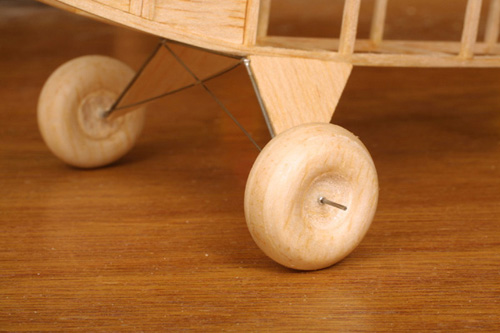
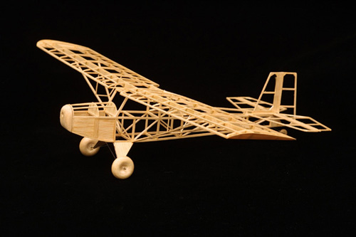
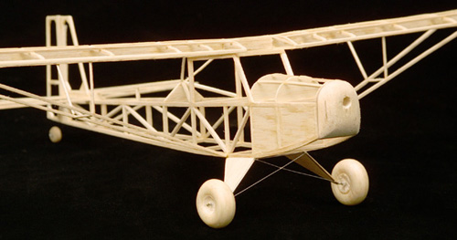
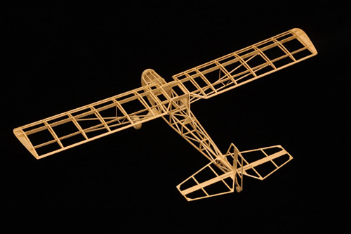

|

15445 - Test fitting the wheels. The axles will be trimmed to length on final assembly.

15840 - The bare framework of my J-3 Kitten prototype. The wing was built up of cracked ribs, to speed construction.

15857 - The bare framework of my J-3 Kitten prototype. The wheels could be made of foam to save a little weight.

15844 - The large tail surfaces that provide stability are clearly apparent in this view.
|